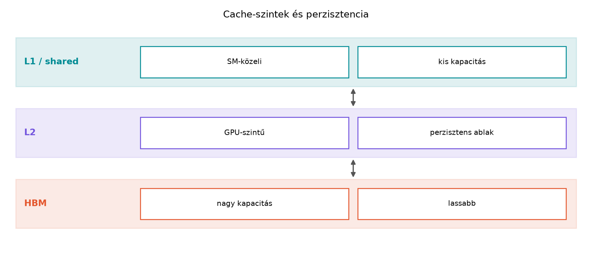

A cache-hierarchia első szintjei – az L1 és az L2 gyorsítótár – a GPU memóriamodelljének azon elemei, amelyeket a fejlesztő közvetlenül nem programoz, mégis minden global memóriából érkező hozzáférésre hatással vannak. A korábbi alfejezetekben megismert shared memory tiling és async copy azt mutatta meg, hogyan tudjuk az adatokat explicit módon a számítás közelébe hozni. Ebben az alfejezetben a hardveres cache-ek működését, a találati arány szerepét, a kapacitások jelentőségét, valamint a cache sor és asszociativitás fogalmát vizsgáljuk meg. A cél az, hogy a cache-viselkedést ne csak elméletben értsük, hanem egy ellenőrzött méréssel is demonstráljuk, és felismerjük a tipikus hibákat.

A GPU memóriahierarchiájában a regiszterek és a shared memory után a következő szintet az L1, majd az L2 cache jelenti. Az L1 cache streaming multiprocesszoronként (SM) található, és a global memória hozzáférések gyors kiszolgálására szolgál. Az L2 cache a GPU teljes eszközén osztozik, minden SM ugyanazt az L2-t használja. Az L1 és L2 közötti alapvető különbség a kapacitásban és az elérési időben van: az L1 kicsi és gyors, az L2 nagyobb és lassabb, de mindkettő lényegesen gyorsabb, mint a global memória (a HBM/GDDR) elérése.
A cache-ek hatékonyságát a találati arány (hit rate) méri. Ha egy thread a global memóriában lévő címet olvas, a hardver először az L1 cache-ben keresi. Ha az adat ott van, akkor találat (hit) történik, és az olvasás néhány ciklus alatt befejeződik. Ha nincs találat, miss következik: az L1-ből továbbítja a kérést az L2 felé. Ha az L2-ben sincs meg az adat, akkor a global memóriából kell betölteni. A találati arány az összes hozzáféréshez viszonyított találatok aránya:
A találati arány közvetlenül meghatározza az átlagos elérési időt:
ahol és a találat és a miss esetén mért elérési idő. A GPU-nál a miss nem egyszerűen egyetlen időérték: az L1 miss után L2 találat vagy L2 miss is bekövetkezhet, így a teljes memóriarendszer hierarchikus sorrendben kezeli a kéréseket. A gyakorlatban a fejlesztő számára a teljes futásidő és az effektív sávszélesség a mérvadó, mert a találati arányt közvetlenül nehéz megfigyelni.
A GPU cache-ek nem koherensek a CPU cache-ekkel, és a CUDA programozási modell nem garantálja, hogy a global memóriába írt adat azonnal látható legyen a cache-ben vagy a többi SM számára. Ezt a láthatósági kérdést a memóriamodell fejezet tárgyalja részletesen. Itt elég annyi, hogy a cache-ek a global és local memória eléréseket gyorsítják, de a regiszterekhez nem kapcsolódnak; a shared memory ugyanakkor az L1-gyel közös fizikai tárolóban osztozik (lásd a következő szakaszt), de a shared memory elérése nem megy át a cache-eken.
A cache-ek kapacitása hardvergenerációnként és compute capability
szerint változik. Az L1 cache az SM-en belül található, és gyakran
osztozik a shared memory-val ugyanazon a fizikai memóriaterületen.
Emiatt az L1 mérete nem állandó: a shared memory igénye befolyásolhatja,
hogy mennyi terület jut az L1-nek. Például az A100 (CC 8.0) SM-enként
192 KiB közös L1/shared területtel rendelkezik, amelyből a shared memory
konfigurálható értékei 0, 8, 16, 32, 64, 100, 132 és 164 KiB (legfeljebb
164 KiB), így a legnagyobb shared memory mellett is marad kb. 28 KiB L1;
a V100 128 KiB, a H100 256 KiB (legfeljebb 228 KiB shared) közös
területtel rendelkezik. A pontos értékeket a CUDA Programming Guide
Compute Capabilities táblázata adja, a saját eszközön pedig a
cudaDeviceGetAttribute (pl.
cudaDevAttrMaxSharedMemoryPerMultiprocessor) kérdezi le. A
gyakorlatban a fejlesztőnek ritkán kell pontosan ismernie az L1 méretét,
mert a legfontosabb hatás a shared memory carving: ha túl sok shared
memory-t foglalunk, az L1 cache kisebb lesz, ami ronthatja a global
memória hozzáférések teljesítményét.
Az L2 cache kapacitása ezzel szemben közvetlenül lekérdezhető, mert a
cudaDeviceProp::l2CacheSize mező byte-ban adja meg. A
modern szerver GPU-kon az L2 kapacitás látványosan nőtt: a V100 6 MiB
L2-vel rendelkezik, az A100 40 MiB, a H100 pedig 50 MiB L2 cache-sel.
Ezt a kapacitást az egész GPU, azaz az összes SM közösen használja. A
kapacitás közvetlenül befolyásolja, hogy mekkora munkahalmaz fér el a
cache-ben: ha a kernel által ismételten elért adatmennyiség kisebb, mint
az L2, akkor az első miss-ek után a későbbi hozzáférések találattal
kerülnek kiszolgálásra, és a teljesítményt az L2 sávszélessége határozza
meg. Ha a munkahalmaz nagyobb, mint az L2, a találati arány drasztikusan
csökken, és a global memória (HBM vagy GDDR, a GPU-tól függően)
sávszélessége válik szűk keresztmetszetté.
Az L1 és L2 közötti kapacitáskülönbség miatt a tervezési stratégiák eltérnek: az L1 az adatok rövid távú, kis méretű újrafelhasználását gyorsítja – például egy szomszédos elem ismételt elérését egy stencil-kernelben –, míg az L2 a nagyobb, blokkszintű vagy akár grid-szintű adatújrafelhasználást képes kiszolgálni. A labor 64 KiB alatti munkahalmazzal az L1-, az L2-méret körüli és afölötti pontokkal az L2- és a DRAM-tartományt mutatja.
A cache-ek az adatokat nem bájtonként, hanem rögzített méretű blokkokban, cache sorokban kezelik. A GPU esetében a memóriarendszer a global memória hozzáféréseket szektorokra bontja; egy szektor jellemzően 32 bájt. Az L1 és L2 cache-ek a szektorokat cache sorokba szervezik, és egy cache sor több szektort tartalmazhat. A cache sor mérete a modern NVIDIA GPU-kon 128 bájt, a szektoré 32 bájt, az L1-en és az L2-n egyaránt; egy cache sor tehát négy szektorból áll. Ha egy warp 32 szála folytonos float elemeket olvas, az 128 bájtnyi adat, amely pontosan négy szektort fed le. Ez a kialakítás teszi lehetővé, hogy a coalescing jól működjön: ha a warp hozzáférései egy cache soron belül maradnak, a memóriarendszer hatékonyan, kevés tranzakcióval szolgálja ki a kérést.
A cache sor méretének és a hozzáférési minta együttese határozza meg a cache line kihasználtságot. Ha például minden thread csak minden 8. float elemet olvas (stride = 8), akkor a szomszédos szálak címe 8 * 4 = 32 bájttal tér el, a warp 32 * 32 = 1024 bájtnyi tartományt ér el, és 32 különböző szektort érint (szálanként egyet) a koaleszkált eset 4 szektora helyett, vagyis nyolcszoros szektorszámot; szektoronként csak 4 bájt hasznosul (12,5%). Ez rontja az effektív sávszélességet, még akkor is, ha az adatok egy része a cache-ben található, mert a cache sorokból csak kevés elemet használunk fel.
float, a
.
szál címe
B) által érintett szektorok és cache sorok
,
8 és 32 mellett (32 B-os szektor, 128 B-os cache sor). Stride 1: 4
szektor, 1 cache sor, 100%; stride 8: 32 szektor, 8 cache sor, 12{,}5%;
stride 32: 32 szektor 32 külön cache sorban, 12{,}5% (szektoronként 4
hasznos bájt).Az asszociativitás azt írja le, hogy egy adott memóriacím mely cache sorokba kerülhet. A legegyszerűbb felépítés a közvetlen leképezés (direct-mapped cache), ahol egy cím csak egyetlen cache sorba kerülhet. A másik véglet a teljesen asszociatív cache, ahol a cím bármelyik sorba kerülhet. A gyakorlatban a GPU-k set-associative cache-eket használnak: a cache sorok halmazokba (set) vannak osztva, és egy cím a halmazon belül néhány lehetséges sorba kerülhet. Az asszociativitás mértéke például 4-way vagy 8-way, ami azt jelenti, hogy egy halmazban 4 vagy 8 cache sor van, és a cím bármelyikbe bekerülhet.
A set-associative cache címfelbontása három részből áll: a tag a cím felső bitjeiből áll, és a sorban tárolt cím egyezését ellenőrzi; az index a halmazt választja ki; az offset pedig a soron belüli bájtot. Ha egy halmazban minden sor foglalt, és egy új cím ugyanabba a halmazba esik, akkor a cache-nek ki kell választania egy sort, amelyet felülír. Ez konfliktusos miss-hez vezethet akkor is, ha a cache egésze még nem telt meg: ha a hozzáférési minta olyan, hogy sok különböző cím ugyanabba a halmazba esik, a cache folyamatosan kiszorítja a még szükséges sorokat (thrashing), és a találati arány leesik. Ez különösen akkor fordul elő, ha a hozzáférési lépés a cache méretének vagy a halmazok számának egész számú többszöröse.
A GPU cache-ek asszociativitása architektúránként változik, és a gyártó általában nem hozza nyilvánosságra a pontos értékeket. A fejlesztő számára a legfontosabb gyakorlati következmény az, hogy a stride hozzáférési minták bizonyos lépésközöknél drasztikusan ronthatják a találati arányt. A mérésnél ezt a jelenséget is megfigyelhetjük.
A labor célja, hogy a cache-szintek hatását saját környezetben, ellenőrzött méréssel mutassuk meg. A kód CUDA C++-ban készül, és a global memóriából történő olvasások futásidejét méri különböző munkahalmaz-méretek és hozzáférési stride-ok mellett. A mérésből arra következtetünk, hogy mikor dolgozik a kernel az L2 cache-ből, és mikor kényszerül a global memória sávszélességére.
A könyv laborjainak szabálya szerint minden mérésnél rögzíteni kell a pontos környezetet. A példa kedvéért tegyük fel a következő konfigurációt, de a laborban ezt a saját géphez kell igazítani:
A kód a cudaDeviceProp struktúrából kiírja az eszköz
legfontosabb paramétereit, így a mérési naplóban ezek is rögzítve
vannak. A laborban a tényleges GPU adatait kell feltüntetni.
A program megvalósítja a cache-viselkedés mérését. Minden szál
repeat darab float elemet olvas egy kettő
hatványú elemszámú (n) tömbből. Az i-edik
iterációban a szál az
((i * nthreads + tid) * stride) & (n - 1) indexű elemet
olvassa, ahol nthreads a grid összes szála. A
stride tehát a szomszédos szálak közötti
elemtávolság (stride = 1 esetén koaleszkált, stride = 8 esetén
szálanként külön szektor, stride = 32 esetén szálanként külön 128 bájtos
cache sor), az iterációk pedig grid-stride módon végigjárják a tömböt. A
maszkolás (& (n - 1)) olcsó, ellentétben a 64 bites
% osztással, amely a kernelt utasításkorlátossá tenné. A
tömbméret emiatt kettő hatványa legyen. Fontos: a stride-dal a bejárt
címek halmaza is változik (stride = s esetén csak minden
s-edik elem érintett), ezért a „sávszélesség” itt a
kért hasznos bájtokra
(nthreads * repeat * 4) vonatkozik, nem a ténylegesen
mozgatott szektorforgalomra; utóbbit az ncu mutatja. A
kódot nem futtattuk, az értékek kitöltendők.
// cache_probe.cu (CUDA 12.x, C++17, sm_80; nem futtatott, a laborban fordítandó)
#include <cuda_runtime.h>
#include <algorithm>
#include <cmath>
#include <cstdio>
#include <cstdlib>
#include <vector>
// Hibakezelő makró: minden CUDA hívás után ellenőriz
#define CUDA_CHECK(call) \
do { \
cudaError_t err = (call); \
if (err != cudaSuccess) { \
std::fprintf(stderr, "CUDA hiba: %s (%s:%d)\n", \
cudaGetErrorString(err), __FILE__, __LINE__); \
std::exit(EXIT_FAILURE); \
} \
} while (0)
// data: a bejárandó tömb (global memória), n: elemszám (kettő hatványa)
// output: nthreads elem; a sum ide kerül, hogy a fordító ne optimalizálja ki az olvasást
// stride: a szomszédos szálak közötti elemtávolság
// repeat: szálankénti olvasások száma
__global__ void cache_probe_kernel(const float* __restrict__ data,
float* __restrict__ output,
size_t n,
size_t stride,
size_t repeat) {
const size_t tid = (size_t)blockIdx.x * blockDim.x + threadIdx.x;
const size_t nthreads = (size_t)gridDim.x * blockDim.x;
const size_t mask = n - 1;
float sum = 0.0f;
for (size_t i = 0; i < repeat; ++i) {
sum += data[((i * nthreads + tid) * stride) & mask];
}
output[tid] = sum;
}
int main() {
cudaDeviceProp prop;
CUDA_CHECK(cudaGetDeviceProperties(&prop, 0));
std::printf("GPU: %s\n", prop.name);
std::printf("Compute capability: %d.%d\n", prop.major, prop.minor);
std::printf("L2 cache: %d MiB\n", prop.l2CacheSize / (1024 * 1024));
std::printf("Shared mem per SM: %zu KiB\n",
prop.sharedMemPerMultiprocessor / 1024);
std::printf("Multiprocessorok: %d\n", prop.multiProcessorCount);
// Munkahalmaz-méretek (float elemek száma), mind kettő hatványa: 32 KiB-tól
// (L1-tartomány) az eszköz L2-méretének nyolcszorosáig (DRAM-tartomány)
std::vector<size_t> sizes;
for (size_t bytes = 32 * 1024; bytes <= 8 * (size_t)prop.l2CacheSize; bytes *= 4)
sizes.push_back(bytes / sizeof(float));
const size_t strides[] = {1, 8, 32};
const size_t repeat = 1024;
const int warmup = 5;
const size_t block = 256;
const size_t grid = (size_t)prop.multiProcessorCount * 8; // fix grid
const size_t nthread = grid * block;
float* d_output;
CUDA_CHECK(cudaMalloc(&d_output, nthread * sizeof(float)));
for (size_t n : sizes) {
std::vector<float> h_data(n);
for (size_t i = 0; i < n; ++i) h_data[i] = static_cast<float>(i) * 0.001f;
float* d_data;
CUDA_CHECK(cudaMalloc(&d_data, n * sizeof(float)));
CUDA_CHECK(cudaMemcpy(d_data, h_data.data(), n * sizeof(float),
cudaMemcpyHostToDevice));
for (size_t stride : strides) {
// Warm-up (5 indítás), majd mérés
for (int w = 0; w < warmup; ++w)
cache_probe_kernel<<<grid, block>>>(d_data, d_output, n, stride, repeat);
CUDA_CHECK(cudaGetLastError());
CUDA_CHECK(cudaDeviceSynchronize());
const int num_iter = 20;
std::vector<float> times(num_iter);
cudaEvent_t start, stop;
CUDA_CHECK(cudaEventCreate(&start));
CUDA_CHECK(cudaEventCreate(&stop));
for (int iter = 0; iter < num_iter; ++iter) {
CUDA_CHECK(cudaEventRecord(start));
cache_probe_kernel<<<grid, block>>>(d_data, d_output, n, stride, repeat);
CUDA_CHECK(cudaGetLastError());
CUDA_CHECK(cudaEventRecord(stop));
CUDA_CHECK(cudaEventSynchronize(stop));
CUDA_CHECK(cudaEventElapsedTime(×[iter], start, stop));
}
double mean = 0.0, var = 0.0;
for (float t : times) mean += t;
mean /= num_iter;
for (float t : times) var += (t - mean) * (t - mean);
const double sd = std::sqrt(var / (num_iter - 1));
std::vector<float> sorted(times);
std::sort(sorted.begin(), sorted.end());
const double med = 0.5 * (sorted[num_iter / 2 - 1] + sorted[num_iter / 2]);
// Kért hasznos bájtok (nem a tényleges szektorforgalom)
const double bytes = (double)nthread * repeat * sizeof(float);
const double bw = bytes / (med * 1e-3) / 1e9;
std::printf("n=%8zu (%.2f MiB), stride=%2zu, medián=%.3f ms (szórás %.3f), "
"kért sávszélesség=%.1f GB/s\n",
n, n * sizeof(float) / (1024.0 * 1024.0), stride, med, sd, bw);
CUDA_CHECK(cudaEventDestroy(start));
CUDA_CHECK(cudaEventDestroy(stop));
}
CUDA_CHECK(cudaFree(d_data));
}
CUDA_CHECK(cudaFree(d_output));
return 0;
}A kódban megfigyelhető a kötelező hibakezelés (a kernelindítás után
cudaGetLastError), a warm-up futtatás, a CUDA events
időmérés, a medián és a szórás, valamint a sávszélesség kiszámítása. A
kernel launch alakja <<<grid, block>>>,
ahol a grid (8 * SM-szám blokk) és a block (256 szál)
dimenzió 1D. A kernelindítások stride-onként 5 warm-up és 20 mért
ismétlést adnak. Ellenőrzés Nsight Compute-tal:
l1tex__t_sector_hit_rate.pct,
lts__t_sector_hit_rate.pct,
dram__bytes_read.sum.
A fordítás parancsa:
nvcc -O3 -std=c++17 -arch=sm_80 -o cache_probe cache_probe.cuA futtatás egyszerű:
./cache_probeA program a standard kimenetre írja az eszközinformációkat és a mérési eredményeket. A laborban a kimenetet mérési naplóként kell elmenteni.
Az alábbi táblázat a mérési napló sablonja. A mért értékeket a laborban, a saját GPU-n kell kitölteni; ebben a kéziratban nem szerepel futtatott mérés. A mérési naplóban a GPU típusát, a drivert, a CUDA verziót és az operációs rendszert külön fel kell tüntetni.
| Munkahalmaz | Stride | Medián idő (ms) | Szórás (ms) | Kért sávszélesség (GB/s) |
|---|---|---|---|---|
| 32 KiB (L1-tartomány) | 1 | mérendő | mérendő | mérendő |
| 32 KiB (L1-tartomány) | 8 | mérendő | mérendő | mérendő |
| 32 KiB (L1-tartomány) | 32 | mérendő | mérendő | mérendő |
| 128 KiB | 1 | mérendő | mérendő | mérendő |
| 128 KiB | 8 | mérendő | mérendő | mérendő |
| 128 KiB | 32 | mérendő | mérendő | mérendő |
| 512 KiB | 1 | mérendő | mérendő | mérendő |
| 512 KiB | 8 | mérendő | mérendő | mérendő |
| 512 KiB | 32 | mérendő | mérendő | mérendő |
| 2 MiB | 1 | mérendő | mérendő | mérendő |
| 2 MiB | 8 | mérendő | mérendő | mérendő |
| 2 MiB | 32 | mérendő | mérendő | mérendő |
| 8 MiB | 1 | mérendő | mérendő | mérendő |
| 8 MiB | 8 | mérendő | mérendő | mérendő |
| 8 MiB | 32 | mérendő | mérendő | mérendő |
| … (×4 lépésekben) | 1 | mérendő | mérendő | mérendő |
| … (×4 lépésekben) | 8 | mérendő | mérendő | mérendő |
| … (×4 lépésekben) | 32 | mérendő | mérendő | mérendő |
| ≥ 4 × L2 (DRAM-tartomány) | 1 | mérendő | mérendő | mérendő |
| ≥ 4 × L2 (DRAM-tartomány) | 8 | mérendő | mérendő | mérendő |
| ≥ 4 × L2 (DRAM-tartomány) | 32 | mérendő | mérendő | mérendő |
Várt tendenciák (nem mért értékek): (a) a munkahalmaz L2-be férése
esetén (A100: 40 MiB) a kért sávszélesség az L2 sávszélesség felé tart,
afölött a DRAM-sávszélesség (A100 40 GB: kb. 1555 GB/s névleges csúcs)
felső korlátja érvényes, ennél nagyobb mért kért sávszélesség csak
cache-találatból származhat; (b) a stride növelése a szektorszám miatt
csökkenti a kért hasznos sávszélességet; (c) a kis munkahalmaznál is
elég munkát kell adni a GPU-nak: a fix grid (8 * SM-szám
blokk) és a repeat együtt biztosítja, hogy a futásidő
legalább néhány ms legyen, különben a kernelindítási overhead torzít. Ha
a futásidő ennél rövidebb, repeat értékét növelni kell.
A várt eredmény az, hogy a kis munkahalmazoknál az L2 cache tartja az adatokat, így a kernel teljesítményét az L2 sávszélessége és a cache találati arány határozza meg. Amikor a munkahalmaz meghaladja az L2 kapacitását, a találati arány drasztikusan csökken, és a global memória sávszélessége válik a szűk keresztmetszetté. A stride növelése pedig azt mutatja, hogy a cache sorok kihasználtsága romlik: a memóriarendszer több szektort tölt be, mint amennyi adatot a warp ténylegesen használ, ezért az effektív sávszélesség csökken.
A mérési naplóban a mért és várt eredményt külön kell választani. A laborban a tényleges mérési adatokat kell rögzíteni, és a várt tendenciákkal összevetni.
A cache-viselkedés mérése során több hiba is előfordulhat. Az alábbiakban a leggyakoribbakat foglaljuk össze.
Hiba: A munkahalmaz méretét nem változtatják, így a cache hatása nem látható. Megoldás: Több, logaritmikus skálán elosztott méretet használjunk, például az L2 cache méretének 1/8-ától a többszöröséig.
Hiba: A mérést egyszer futtatják, nincs warm-up vagy ismétlés. Megoldás: A könyv mérési protokollja szerint legalább 5 warm-up és legalább 20 mért ismétlés szükséges; a mediánt és az IQR-t (vagy a szórást) kell közölni.
Hiba: A kernelben a fordító kioptimalizálja az olvasást, mert az összeg nincs felhasználva. Megoldás: Az összeget mindig vissza kell írni egy kimeneti tömbbe, ahogy a példában is tesszük.
Hiba: A stride-ot túl nagyra választják, és a mérés a global memória sávszélességét méri, nem a cache-t. Megoldás: Olyan stride-okat használjunk, amelyek a szektor méretének (32 bájt, azaz 8 float) egész számú többszörösei, de ne legyenek túl nagyok, hogy a coalescing és a cache line kihasználtság hatása szétválasztható legyen.
Hiba: A cache line méretét összekeverik a warp méretével. Megoldás: A warp 32 szál; a cache sor 128 bájt, a szektor 32 bájt (az L1-en és az L2-n egyaránt). Ezek különböző fogalmak, bár mindkettő a 32-es számhoz kapcsolódik.
Hiba: A mérési eredményeket abszolút igazságként kezelik anélkül, hogy a környezetet rögzítenék. Megoldás: Minden mérésnél rögzíteni kell a GPU modelljét, a drivert, a CUDA verziót, az órajelet és a háttérterhelést. Csak így reprodukálható az eredmény.
Válaszvázlat. (1) A találati arány lecsökken, mert
az ismételten elért adat nem fér el; a hierarchiában a kérések L2-ből,
majd DRAM-ból teljesülnek, és a DRAM-sávszélesség lesz a határ. Példa:
ha h = 0,9, T_hit = 30 és
T_miss = 300 ciklus, akkor
T_avg = 0,9 * 30 + 0,1 * 300 = 57 ciklus;
h = 0,5 mellett már 165 ciklus. (2) Nagy
stride-nál a warp több szektort érint, miközben szektoronként csak kevés
bájt hasznosul, így az effektív sávszélesség a hasznosulási aránnyal
arányosan csökken (stride = 8: 12,5%). (3) Kisebb L1 miatt kevesebb adat
tartható az SM közelében, nő az L2-forgalom és a latency; ezért a shared
memory foglalását a találati arány romlásával együtt kell mérlegelni
(pl. cudaFuncAttributePreferredSharedMemoryCarveout).
Ebben az alfejezetben bemutattuk a GPU L1 és L2 cache-ének szerepét, a találati arány fogalmát, a kapacitások jelentőségét, valamint a cache sor és asszociativitás alapjait. A labor mérőprogramja és naplósablonja lehetővé teszi, hogy a saját GPU-n kimérd, milyen mértékben befolyásolja a munkahalmaz mérete és a hozzáférési minta a teljesítményt. A következő alfejezetben a cache hint-ekkel és a hozzáférési szándék explicit jelzésével foglalkozunk, amelyek lehetővé teszik a cache viselkedésének finomabb szabályozását.